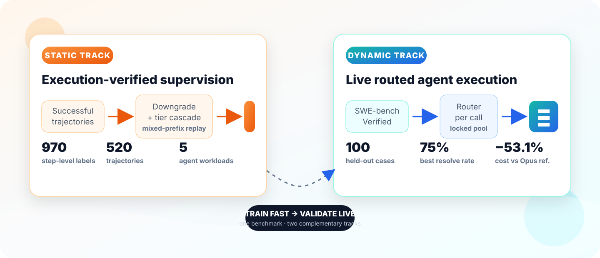

Paper v2 · Open benchmark
Route every agent step to the cheapest model that can solve it.
TwinRouterBench connects fast, execution-verified static supervision with live agent evaluation. Train and debug a router on fixed per-call labels, then measure end-to-end task success and realized API cost under a locked model pool.
75/100 resolved for $25.66
versus 74/100 for the $54.73 all-Opus reference · 53.1% lower cost

One benchmark · two tracks
Fast iteration without giving up live validity
Static labels make router development reproducible; the dynamic track tests whether those decisions survive real tools, state changes, failures, and cost accounting.
Static supervision
Successful trajectories are downgraded step by step. Tier cascade, mixed-prefix replay, task judges, and human review identify the cheapest sufficient model tier for each call.
- SWE-bench, BFCL, mtRAG, QMSum, PinchBench
- Fixed labels and nominal cost metrics
- Open generation, review, and publish pipeline
Dynamic evaluation
The router selects a model for every live agent call. Official SWE-bench resolution, realized API spend, step counts, cache policy, and the model pool are evaluated together.
- 100 held-out SWE-bench Verified cases
- End-to-end task success and dollar cost
- Comparable public leaderboard protocol
Reproduce locally
Run the complete construction flow without an API key
The deterministic mock backend exercises loading, trajectory generation, downgrade search, judging, review artifacts, provenance, and isolated publication. Replace the backend only when you are ready for live model calls.
terminal
git clone https://github.com/CommonstackAI/TwinRouterBench
cd TwinRouterBench
pip install -e .
twinrouterbench data generate \
--benchmark all \
--backend mock \
--output-dir runs/data-generation/mock-allPublic results
Best Routers by Resolve Rate
Compare conditional per-call routers on held-out SWE-bench Verified runs and inspect the static tier-supervision bank.
Quick Picks
Best routers for common comparisons
Success Rate Rankings
| Rank | Router | Badges | Resolve Rate | Cost | Steps | Value | Notes |
|---|
Static Supervision Bank
conditional per-call labels
Protocol
Fixed assumptions behind the public leaderboard numbers.
Dynamic split
Ranking fields
Success Rate sorts by resolved cases. Cost sorts by average routed spend. Value sorts by resolve-rate percentage per average dollar.
Static target
Static labels are conditional per-call tier targets over low, mid, mid_high, and high model tiers.
Citation
Use TwinRouterBench in your work
Machine-readable citation metadata is included in the repository as CITATION.cff.
@misc{yang2026twinrouterbench,
title={TwinRouterBench: Fast Static and Live Dynamic Evaluation for Realistic Agentic LLM Routing},
author={Yang, Pei and Chen, Wanyi and others},
year={2026},
eprint={2605.18859},
archivePrefix={arXiv},
primaryClass={cs.LG}
}